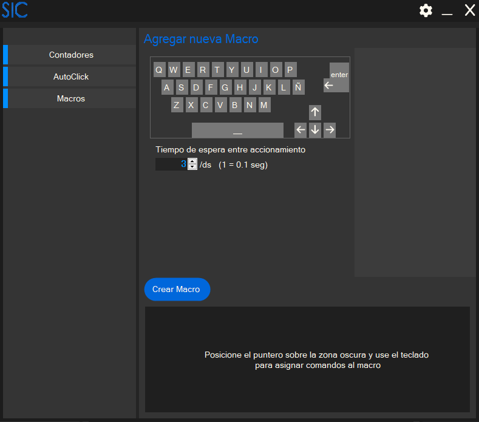
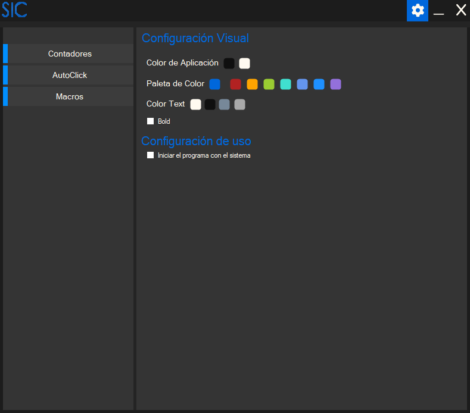

El sistema SIC, o System Inputs Controler (sistema de control de entradas), es un sistema que permite
controlar la ejecución de los inputs realizados por los periféricos, más concretamente el teclado y
el ratón.
NO, este programa no es un keyloger.
NO, este programa no es un keyloger.
FUNCIONALIDAD

CONTADORES
Este programa busca poder proporcionar un control sobre los clics y las pulsaciones de las teclas brindando contadores que cuentan los diferentes clics del ratón y las pulsaciones de cualquier tecla del teclado.¿Alguna vez te preguntaste cuanto uso le das al ratón?
¿Cuantos clics haces al día? ¿Cuantas teclas pulsas al día?
¿Haces demasiados clics?¿Que tanto uso le das a tus periféricos?
El programa facilita contadores para tener un control sobre estos datos. Además, facilita un temporizador para poder tener una referencia de tiempo.
AUTOCLICKER
Por supuesto, como el nombre indica, es un controlador de inputs, no un contador por lo que este programa incluye la posibilidad de automatizar el ingreso de comandos hacia el sistema operativo. ¿Automatizar comandos? ¿Que comandos? ¿Que se puede automatizar? Supongo que alguna vez haz oído sobre autoclickers... ¿si?... ¿no?... bueno, en palabras simples, un autoclicker permite ejecutar múltiples clics por segundo sin tener que mover el dedo para presionar múltiples veces el clic, solo con apretar una tecla configurada por usted mismo. Puede indicar cual clic quiere automatizar (clic izquierdo o clic derecho) y cuantos clics por segundo quiere hacer. Debe tener en cuenta que la cantidad de clics por segundos estarán limitados por la cantidad que usted indique y por la capacidad de procesamiento del dispositivo que esté usando, a una PC más potente tendrá mayor capacidad de clics por segundo.

MACROS
Claro, sistema de control de entradas, un autoclicker no es suficiente para decir que se controlan entradas, por eso el programa incluye la posibilidad de crear macros. Una macro es un conjunto de comandos listos para ser ejecutados uno atrás de otro en un periodo de tiempo sin que el usuario tenga que accionar cada uno de los comandos de forma individual. De la misma forma que se activaría el autoclicker con una tecla configurada, por el usuario, también las macros podrán ser configuradas para ser accionadas con una tecla a elección. ¿Y cuales serían los comandos que se pueden ejecutar de manera tan simple? Pueden ser cualquiera de los clics del ratón (clic izquierdo, clic derecho, clic central, clics extras del ratón) o cualquier tecla del teclado permitiendo escribir palabras completas solo presionando una tecla o cosas más complejas según la necesidad, incluso una oración o párrafo completo al presionar una sola tecla.OPCIONES

Personalización
El programa cuenta con la posibilidad de personalizar su aspecto.¿Cómo puede hacer esto?
CONFIGURACIÓN DE FUNCIONAMIENTO
En las opciones de programa también puede cambiar una configuración importante de programa, iniciar junto con el sistema. Es importante esta función porque va a hacer que la contabilización de las teclas y los clics sea más exacto, de esta manera tiene un control del uso de sus periféricos más preciso.DETALLES TÉCNICOS
 (C Sharp / C#)
(C Sharp / C#)
CÓDIGO Y PROGRAMA
 GitHub
GitHub
El programa aún no cuenta con un instalador debido a que su versión completa aun no está finalizada, sin embargo puede ver el código desde github